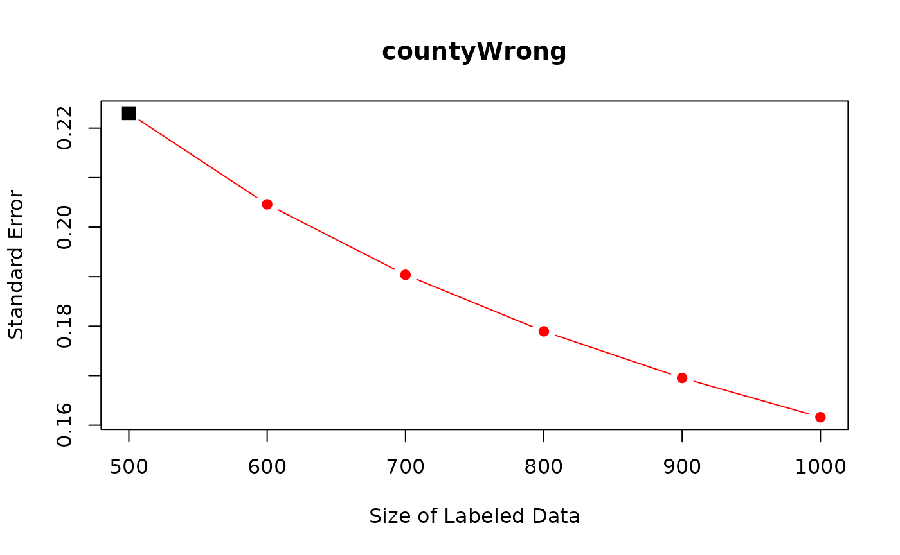

Frequently Asked Questions
faq.RmdOn this page, we answer frequently asked questions.
How Many Documents Should Experts Annotate?
In practice, researchers might wonder how many documents they have to expert annotate. To help researchers in such common scenarios, we develop a data-driven power analysis: after annotating a small number of documents, we can predict how many more documents researchers need to annotate in order to achieve a user-specified size of standard error.
As an example, we use the data we introduced in the Get Started page.
## countyWrong pred_countyWrong SendOrNot prefecWrong connect2b prevalence
## 1 0 0 0 0 1 0
## 2 0 1 0 0 0 0
## 3 1 0 0 0 0 0
## 4 NA 0 0 0 1 0
## 5 NA 0 0 1 0 0
## 6 NA 0 0 0 1 0
## regionj groupIssue
## 1 0 1
## 2 0 1
## 3 0 1
## 4 0 1
## 5 0 1
## 6 0 1In particular, users can apply function power_dsl() to
predict standard errors with different size of expert-coded data.
Researchers can use the same arguments from dsl and add one
argument labeled_size, which represents the number of
expert-coded documents for which we predict standard errors. Recall that
the current number of expert-coded documents is 500.
power_out <- power_dsl(labeled_size = c(600, 700, 800, 900, 1000),
model = "logit",
formula = SendOrNot ~ countyWrong + prefecWrong +
connect2b + prevalence + regionj + groupIssue,
predicted_var = "countyWrong",
prediction = "pred_countyWrong",
data = PanChen)## Cross-Fitting: 1/10..2/10..3/10..4/10..5/10..6/10..7/10..8/10..9/10..10/10..
## Power Analysis: 1/10..2/10..3/10..4/10..5/10..6/10..7/10..8/10..9/10..10/10..
summary(power_out)##
## ==========================
## Predicted Standard Errors:
## ==========================
## (Intercept) countyWrong prefecWrong connect2b prevalence regionj
## 500 0.3621287 0.2229501 0.2969601 0.1196955 0.1519671 0.4565481
## 600 0.3616287 0.2045568 0.2962946 0.1189752 0.1514800 0.4563130
## 700 0.3612711 0.1903336 0.2958184 0.1184581 0.1511311 0.4561449
## 800 0.3610027 0.1789257 0.2954606 0.1180687 0.1508689 0.4560189
## 900 0.3607938 0.1695230 0.2951821 0.1177650 0.1506646 0.4559208
## 1000 0.3606266 0.1616074 0.2949591 0.1175214 0.1505010 0.4558423
## groupIssue
## 500 0.3597029
## 600 0.3596288
## 700 0.3595758
## 800 0.3595361
## 900 0.3595052
## 1000 0.3594804
## ---The first row shows the current standard errors for coefficients. The remaining rows show predicted standard errors.
Importantly, as we increase the number of expert annotations for
countyWrong, standard errors for countyWrong
are predicted to decrease sharply. For the other variables, we do not
see similarly sharp reduction because the other variables are already
observed for the entire data. Small reduction in their standard errors
come from correlations with countyWrong.
Researchers can use function plot to visualize the power
analysis.
plot(power_out, coef_name = "countyWrong")
Finally, researchers can also apply power_dsl() directly
to the output from function dsl().
out <- dsl(model = "logit",
formula = SendOrNot ~ countyWrong + prefecWrong +
connect2b + prevalence + regionj + groupIssue,
predicted_var = "countyWrong",
prediction = "pred_countyWrong",
data = PanChen)## Cross-Fitting: 1/10..2/10..3/10..4/10..5/10..6/10..7/10..8/10..9/10..10/10..##
## Power Analysis: 1/10..2/10..3/10..4/10..5/10..6/10..7/10..8/10..9/10..10/10..
summary(power_out2)##
## ==========================
## Predicted Standard Errors:
## ==========================
## (Intercept) countyWrong prefecWrong connect2b prevalence regionj
## 500 0.3621287 0.2229501 0.2969601 0.1196955 0.1519671 0.4565481
## 600 0.3616287 0.2045568 0.2962946 0.1189752 0.1514800 0.4563130
## 700 0.3612711 0.1903336 0.2958184 0.1184581 0.1511311 0.4561449
## 800 0.3610027 0.1789257 0.2954606 0.1180687 0.1508689 0.4560189
## 900 0.3607938 0.1695230 0.2951821 0.1177650 0.1506646 0.4559208
## 1000 0.3606266 0.1616074 0.2949591 0.1175214 0.1505010 0.4558423
## groupIssue
## 500 0.3597029
## 600 0.3596288
## 700 0.3595758
## 800 0.3595361
## 900 0.3595052
## 1000 0.3594804
## ---We can see that power_out2 is identical to
power_out.
What Types of Predicted Variables Can DSL Handle?
As we have shown in various examples in Get Started Page and Models Available in DSL, users can incorporate predicted variables (i.e., text-based variables) as the outcome and/or independent variables.
For example, when users have text-based variables as both the outcome
and independent variables, they can specify them as a vector in
predicted_var.
## Y X1 pred_Y pred_X1 X2 X3 X4
## 1 0 -0.1443742 0 0.9486148 -0.2079232 -0.06932595 1.65748976
## 2 1 -1.2864079 1 -1.8766233 -1.6961906 -0.27274691 1.54678252
## 3 1 -1.4665386 1 -2.4866911 -0.6212224 -0.70787173 -0.27913330
## 4 0 -1.3554115 1 0.5138155 1.2299990 -0.86519213 0.18177847
## 5 NA NA 1 -2.1116582 0.6624512 1.19504665 -0.02724476
## 6 NA NA 1 -0.6391120 -0.8971608 1.20072203 -0.51241357
## X5 X6 X7 X8 X9 X10
## 1 0.96825927 0.05389556 -2.0762690 0.2653279 1.458743948 0.4127003
## 2 -0.46626141 0.73182950 -1.7677551 1.0790758 -0.003172833 -0.5313550
## 3 -0.26973904 -1.75925076 -0.1585703 0.6823146 0.050500221 -1.2679467
## 4 0.41947288 -0.32375937 0.3226157 0.5131867 -2.065367939 1.6111660
## 5 -0.94927647 1.01808653 0.7608077 1.6830265 -1.907959205 -0.6979879
## 6 0.09162689 1.15086391 -0.7917356 0.9765960 -0.144924483 -1.2848539
out_logit <- dsl(model = "logit",
formula = Y ~ X1 + X2 + X4,
predicted_var = c("Y", "X1"),
prediction = c("pred_Y", "pred_X1"),
data = data_logit)## Cross-Fitting: 1/10..2/10..3/10..4/10..5/10..6/10..7/10..8/10..9/10..10/10..When there are more than one variable in predicted_var,
rows that observe all the variables in predicted_var are
counted as labeled, and rows that have at least one NA in
variables in predicted_var are counted as non-labeled.
(More Complex) Sampling Strategies?
Researchers might consider sampling strategies for expert annotations other than random sampling with equal probabilities. As long as the sampling probability for each document is decided by the researchers and is greater than zero, DSL is applicable. For example, DSL allows stratified or block sampling schemes (i.e., change the sampling probability of documents based on document-level observed covariates) and can cover any case where the sampling probability depends on the LLM annotation, document-level covariates, independent variables, or the outcome variable. This generality is important because researchers might want to over-sample documents that are difficult to annotate.
In function dsl(), when using these more complex
sampling strategies, users should specify the sampling probability of
each document. For example, in the following data set, we set the
sampling probability for expert annotation to be 30% for documents with
X1 = 1 and set it to be 10% for documents with
X1 = 0. As you see below, variable sample_prob
is 0.3 when X1 = 1 and 0.1 when
X1 = 0. Thus, this is random sampling with unequal
probabilities.
## Y pred_Y sample_prob X1 X2 X3
## 1 0 1 0.1 0 -0.7075315 0.774843489
## 2 0 0 0.1 0 -0.1282225 -0.351258120
## 3 0 1 0.3 1 -0.9908576 0.733213596
## 4 NA 1 0.3 1 -1.1068022 -0.403284103
## 5 NA 1 0.1 0 0.2493619 0.510531594
## 6 NA 1 0.1 0 -1.0298485 0.004936994When running dsl(), users just need to specify this
unequal sampling probability in argument sample_prob.
out_unequal <- dsl(model = "logit",
formula = Y ~ X1 + X2 + X3,
predicted_var = c("Y"),
prediction = c("pred_Y"),
sample_prob = "sample_prob",
data = data_unequal)## Cross-Fitting: 1/10..2/10..3/10..4/10..5/10..6/10..7/10..8/10..9/10..10/10..
summary(out_unequal)## ==================
## DSL Specification:
## ==================
## Model: logit
## Call: Y ~ X1 + X2 + X3
##
## Predicted Variables: Y
## Prediction: pred_Y
##
## Number of Labeled Observations: 334
## Random Sampling for Labeling with Equal Probability: No
## (Sampling probabilities are defined in `sample_prob`)
##
## =============
## Coefficients:
## =============
## Estimate Std. Error CI Lower CI Upper p value
## (Intercept) -0.2152 0.1185 -0.4475 0.0171 0.0347 *
## X1 0.1055 0.3351 -0.5512 0.7622 0.3764
## X2 0.1072 0.1087 -0.1058 0.3203 0.1619
## X3 -0.0453 0.1159 -0.2725 0.1819 0.3480
## ---
## Signif. codes: 0 '***' 0.001 '**' 0.01 '*' 0.05 '.' 0.1 ' ' 1
## 95% confidence intervals (CI) are reported.When users rely on random sampling with unequal probabilities,
Random Sampling with Equal Probability becomes
No.
How Can We Implement Cluster Standard Errors in DSL?
Users need to supply a variable name that defines clusters to
argument cluster in function dsl(). This
option is available for all model types (lm,
logit, and felm).
data("data_felm") # example data
out_felm_one <- dsl(model = "felm",
formula = log_pcap ~ log_gsp + log_pc + unemp,
predicted_var = "log_gsp",
prediction = "pred_log_gsp",
fixed_effect = "oneway",
index = c("state"),
cluster = "state",
data = data_felm)## Cross-Fitting: 1/10..2/10..3/10..4/10..5/10..6/10..7/10..8/10..9/10..10/10..
summary(out_felm_one)## ==================
## DSL Specification:
## ==================
## Model: felm (oneway)
## Call: log_pcap ~ log_gsp + log_pc + unemp
## Fixed Effects: state
##
## Predicted Variables: log_gsp
## Prediction: pred_log_gsp
##
## Number of Labeled Observations: 334
## Random Sampling for Labeling with Equal Probability: Yes
##
## =============
## Coefficients:
## =============
## Estimate Std. Error CI Lower CI Upper p value
## log_gsp 0.0031 0.0020 -0.0007 0.0069 0.0563 .
## log_pc 0.5357 0.0419 0.4537 0.6178 0.0000 ***
## unemp 0.0067 0.0021 0.0025 0.0108 0.0008 ***
## ---
## Signif. codes: 0 '***' 0.001 '**' 0.01 '*' 0.05 '.' 0.1 ' ' 1
## 95% confidence intervals (CI) are reported.
## Standard errors are clustered by state.When users applied cluster standard errors, the level of clustering
is reported after the Coefficients table, e.g., as
Standard errors are clustered by state.
What if the Unit of Analysis is not the same as the Unit of Labeling?
In some applications, the unit of analysis is not the same as the unit of labeling. Researchers often annotate each document, but the unit of analysis might be some aggregates of documents. For example, users might code whether each online post by political candidates mentions an economic policy: the unit of labeling is at the online post level. But researchers might be interested in how the proportion of posts mentioning an economic policy varies between different candidates: the unit of analysis is at the candidate level. Here, each candidate has multiple posts, and the main text-based variable is defined as the proportion of online posts mentioning an economic policy for each candidate.
In such applications, how can users apply DSL? We provide step by step guide here.
How to use DSL for Estimating the Category Proportions over Time or across Groups?
Many scholars are interested in estimating the proportion of all documents in each user-specified category. For example, we might study how the proportion of censored documents changes over time, or how the proportion of social media posts containing hate speech differs across groups, such as Democrats and Republicans. These questions can be analyzed within the DSL framework, too.
We start with the basic data structure for dsl. In this
data, Y denotes whether a document belongs to a category of
interest, and pred_Y denotes the predicted value. We
estimate the category proportions over time here as an example, but the
same approach applies to estimating the category proportions across
groups.
## Y pred_Y year
## 1 1 1 2001
## 2 1 0 2001
## 3 0 1 2001
## 4 NA 1 2001
## 5 NA 0 2001
## 6 NA 0 2001To estimate the category proportions over time, researchers can
regress a text category on time using linear regression without an
intercept. This is numerically equivalent to computing the DSL estimates
within each year separately. To implement this, researchers can simply
add -1 to formula to remove an intercept. Note
that this estimation approach uses the numerical equivalence between
linear regression (lm) and subgroup means (as scholars use
linear regression to compute difference-in-means in randomized
experiments), and thus, researchers do not need to use logistic
regression (logit).
out_time <- dsl(model = "lm",
formula = Y ~ as.factor(year) - 1,
predicted_var = "Y",
prediction = "pred_Y",
data = data_time)## Cross-Fitting: 1/10..2/10..3/10..4/10..5/10..6/10..7/10..8/10..9/10..10/10..
summary(out_time)## ==================
## DSL Specification:
## ==================
## Model: lm
## Call: Y ~ as.factor(year) - 1
##
## Predicted Variables: Y
## Prediction: pred_Y
##
## Number of Labeled Observations: 500
## Random Sampling for Labeling with Equal Probability: Yes
##
## =============
## Coefficients:
## =============
## Estimate Std. Error CI Lower CI Upper p value
## as.factor(year)2001 0.6447 0.0652 0.5169 0.7725 0e+00 ***
## as.factor(year)2002 0.6233 0.0653 0.4953 0.7514 0e+00 ***
## as.factor(year)2003 0.2959 0.0808 0.1376 0.4542 1e-04 ***
## as.factor(year)2004 0.4441 0.0693 0.3084 0.5799 0e+00 ***
## as.factor(year)2005 0.6290 0.0722 0.4876 0.7705 0e+00 ***
## as.factor(year)2006 0.4278 0.0727 0.2853 0.5702 0e+00 ***
## as.factor(year)2007 0.5710 0.0766 0.4209 0.7212 0e+00 ***
## as.factor(year)2008 0.6704 0.0674 0.5382 0.8026 0e+00 ***
## as.factor(year)2009 0.4957 0.0639 0.3704 0.6210 0e+00 ***
## as.factor(year)2010 0.4760 0.0704 0.3380 0.6139 0e+00 ***
## ---
## Signif. codes: 0 '***' 0.001 '**' 0.01 '*' 0.05 '.' 0.1 ' ' 1
## 95% confidence intervals (CI) are reported.Here, coefficients in front of each year are the estimated category proportions for each year.
How Can We Internally Implement Supervised Machine Learning for Predictions?
One of the most common use cases of the package is when researchers
have LLM annotations as prediction for some key text-based
variables defined in predicted_var.
Alternatively, researchers can also internally implement the classical supervised machine learning methods to make predictions using the expert-coded data.
By building on SuperLearner package, we offer the
following 41 supervised ML methods.
## [1] "grf" "bartMachine" "bayesglm" "biglasso"
## [5] "caret" "caret.rpart" "cforest" "earth"
## [9] "gam" "gbm" "glm" "glm.interaction"
## [13] "glmnet" "ipredbagg" "kernelKnn" "knn"
## [17] "ksvm" "lda" "leekasso" "lm"
## [21] "loess" "logreg" "mean" "nnet"
## [25] "nnls" "polymars" "qda" "randomForest"
## [29] "ranger" "ridge" "rpart" "rpartPrune"
## [33] "speedglm" "speedlm" "step" "step.forward"
## [37] "step.interaction" "stepAIC" "svm" "xgboost"When researchers internally implement the classical supervised
machine learning methods, the data structure looks like the data used in
the classical supervised machine learning. In this example,
Y requires text annotation and there are 10 variables
available to predict Y.
## Y X1 X2 X3 X4 X5
## 1 -0.2050247 -0.09910396 -0.87960666 0.8015421 1.29028152 0.8532547
## 2 -1.4856037 1.23123941 1.99007602 0.3868839 -0.07223693 -1.2962462
## 3 0.9894281 0.46408759 0.42323988 -0.1097634 0.25241778 -0.9464925
## 4 NA -1.12227958 -0.06897893 -0.4601287 1.49975679 1.5618861
## 5 NA -0.67877168 -0.33290315 -1.4747134 -1.89504047 0.5137869
## 6 NA 0.04734624 -0.18367264 -1.1965101 0.11178831 0.1975828
## X6 X7 X8 X9 X10
## 1 -0.4914913 -1.0640511 0.01688910 1.8391539 -2.3456977
## 2 -1.2428339 0.0644001 1.92829279 -1.3745543 -0.5644520
## 3 0.8812547 1.5719390 -1.31725336 0.9007558 0.4595894
## 4 0.2493619 0.5105316 0.02339191 -0.3850724 -1.2070657
## 5 0.2394639 -1.4016767 -0.30634290 1.5934046 0.4291247
## 6 -1.6337523 -0.3078537 -0.51741473 -1.1128772 -0.5747400To internally implement supervised machine learning methods, users
have to decide on a supervised machine learning model (specified in
sl_method) and predictors (specified in
feature). In formula, researchers can then
specify the downstream statistical model they run after predicting
Y. In this example, the main downstream analysis is linear
regression where the outcome is Y and independent variables
are X1,X2, and X4.
out_lm_grf <- dsl(model = "lm",
formula = Y ~ X1 + X2 + X4,
predicted_var = c("Y"),
sl_method = "grf",
feature = c("X1", "X2", "X3", "X4", "X5", "X6", "X7", "X8", "X9", "X10"),
data = data_sl)## Cross-Fitting: 1/10..2/10..3/10..4/10..5/10..6/10..7/10..8/10..9/10..10/10..Here, we set sl_method = "grf" to use generalized random
forest as the supervised machine learning model.
summary(out_lm_grf)## ==================
## DSL Specification:
## ==================
## Model: lm
## Call: Y ~ X1 + X2 + X4
##
## Predicted Variables: Y
## Prediction: with predictors specified in `covariates`
##
## Number of Labeled Observations: 500
## Random Sampling for Labeling with Equal Probability: Yes
##
## =============
## Coefficients:
## =============
## Estimate Std. Error CI Lower CI Upper p value
## (Intercept) 0.0299 0.0497 -0.0676 0.1273 0.2741
## X1 0.3980 0.0534 0.2934 0.5026 0.0000 ***
## X2 -0.2432 0.0496 -0.3405 -0.1460 0.0000 ***
## X4 -0.2711 0.0498 -0.3688 -0.1734 0.0000 ***
## ---
## Signif. codes: 0 '***' 0.001 '**' 0.01 '*' 0.05 '.' 0.1 ' ' 1
## 95% confidence intervals (CI) are reported.Finally, for many existing methods that require stringent assumptions
about prediction errors, they often have strict rules about whether
variables used in the prediction stage can overlap with variables in the
main analyses. Fortunately, in DSL, researchers do not need to worry
about these issues because DSL does not require any assumption about
prediction error. This is why researchers can include variables in the
main statistical analyses (X1, X2, and
X4) in the prediction step as well.